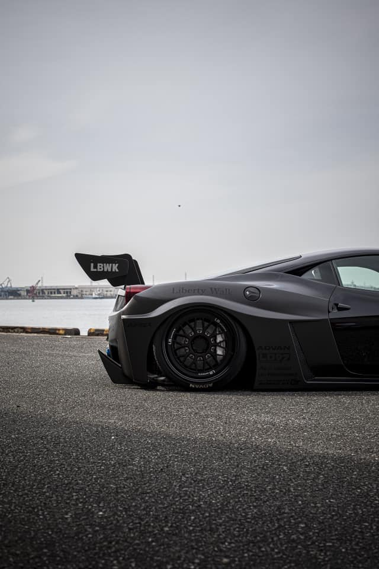
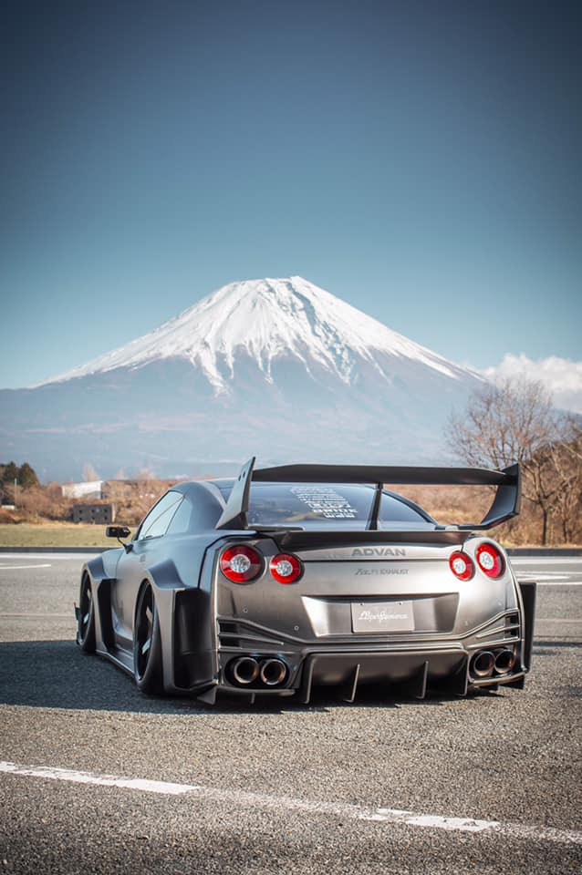
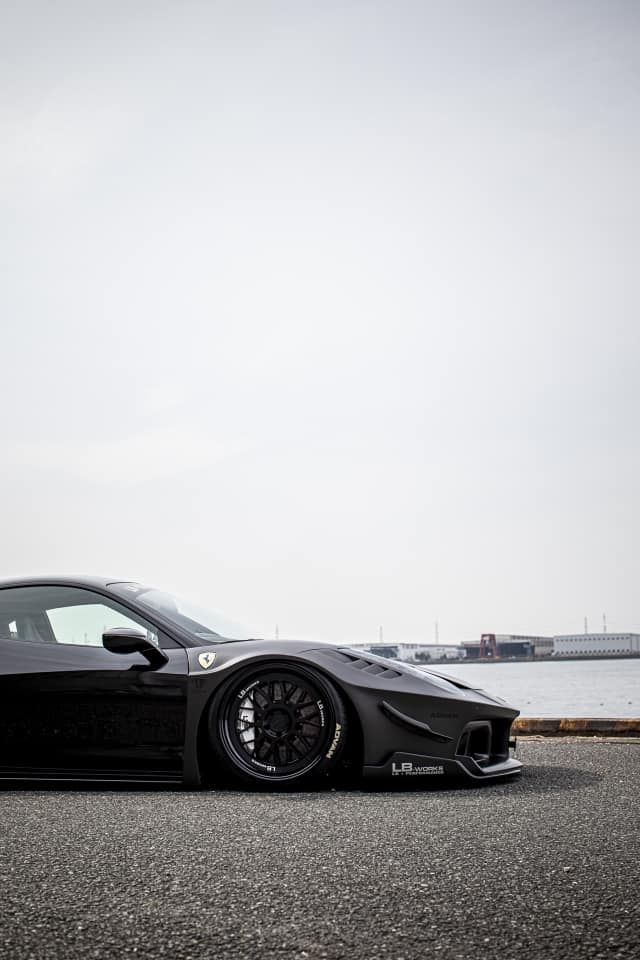
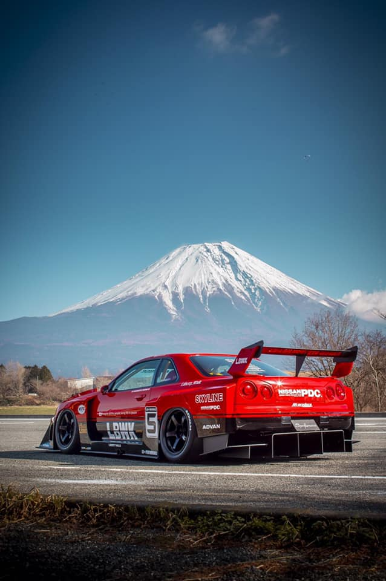

Home
"Modificação".
Essa é a palavra que melhor expressa o nosso estilo.
Para explicar o nascimento de "LB ☆ Performance" e "LB ☆ WORKS",
temos que citar uma pessoa.
Um dia, um cliente que também era amigo do representante do Liberty Walk, Wataru Kato
, disse: "Quero andar de Lamborghini".
No entanto, eu não conseguia sentir a ferocidade da Lamborghini Murcielago original.
Então houve um pedido do cliente: "Eu quero uma aparência mais legal",
Em 2008, decidimos desenvolver um kit de carroceria para a Murcielago.
Este é o início da marca original "LB ☆ Performance".
Em 2009, exibimos a Murcielago com o body kit "LB ☆ Performance" no SEMA SHOW.
"LB ☆ PERFORMANCE" fez sua estreia mundial.
No entanto, apesar de ser bem recebido pelos visitantes,
raramente gerou negócios.
É fácil parar por aí.
Mas uma vez que você começa, você não pode desistir.
Nós recentemente desenvolvemos "LB ☆ WORKS" Murcielago equipado com "Works Fender" e o
exibimos no SEMA SHOW 2012.
Cortar a carroceria de uma Lamborghini que custa dezenas de milhões de ienes
e prender o “para-lamas” com parafusos.
O impacto disso foi forte.
Os americanos que viram "LB ☆ WORKS", Murcielago
aplaudiram.
No SEMA SHOW 2013, Ferrari 458 Italia e Nissan GT-R,
dois "LB ☆ WORKS" foram anunciados ao mesmo tempo.
No SEMA SHOW 2014, quatro modelos incluindo "LB ☆ WORKS" Lamborghini Aventador foram anunciados.
Depois disso, continuamos a anunciar novos trabalhos, e agora estamos.
Atualmente, existem cerca de 200 "LB ☆ WORKS" habitando o Japão.
Existem cerca de 300 a 350 "LB ☆ WORKS" no mundo.
Agora, "Works Style"
cresceu e se tornou um método personalizado que interessa mais aos amantes de carros na América do Norte e do Sul, Ásia, Oceania e Oriente Médio .
Além disso, a
linha casual "LB ☆ STANCE" foi anunciada para tornar "LB ☆ WORKS" mais familiar .
O kit de carroceria LB ☆ STANCE está disponível para o Nissan Skyline Coupe (V36) e o BMW MINI (R56).
Também lançamos "LB ☆ KIDS CAR", que é uma versão deformada de "LB ☆ WORKS" porque
queremos dizer às crianças ao redor do mundo como os carros japoneses modificados
são maravilhosos .
Galeria
   Sobre
LibertyWalk co., Ltd. - Vendas de carros [vendas de veículos]
Aceitamos desde a venda de veículos e carros completos LB até a inspeção e manutenção veicular, bem como a customização de seus próprios veículos.
Se for personalizado, deixe por nossa conta!
Sinta-se à vontade para nos contatar para consultas sobre compra de veículos, carros completos e customizados.
Endereço 1-178 Seto-cho, Owariasahi-shi, Aichi 488-0023, Japão
número de telefone 0561-51-0001
Número de fax 0561-51-0002
O email info@libertywalk.co.jp
horário comercial 10h ~ 19h
Feriado normal Segundas e terças-feiras
LB Holdings co., Ltd. - Vendas de peças e kits de carroceria [vendas de peças]
Além de desenhar, desenvolver, planejar e vender peças para Body Kit, estamos expondo em eventos em cada país. As vendas de peças não têm importância nacional ou internacional.
Sinta-se à vontade para entrar em contato conosco para quaisquer perguntas ou dúvidas relacionadas ao Body kit.
Endereço 2-9 Setogawa-cho, Owariasahi, Aichi 488-0023, Japão
número de telefone 0561-51-5252
Número de fax 0561-51-5255
O email info@lb-holdings.jp
horário comercial 10h ~ 19h
Feriado normal Segundas e terças-feiras
Fábrica [Pintura de Chapas Metálicas]
Esta é a nossa própria fábrica de chapas de metal que fabrica e desenvolve carros completos LB, repara chapas de metal e realiza customização e reparos relacionados a veículos, como pintura customizada.
Especialistas como chapas, tintas e aerógrafo ficarão encarregados do acabamento de cada um de seus carros.
Fique à vontade para nos visitar, pois você pode ver o cenário de trabalho.
Endereço 2-192 Motomachi, Komaki City, Prefeitura de Aichi 485-0072
número de telefone 0568-71-0004
Número de fax 0568-71-0009
O email info@libertywalk.co.jp
horário comercial 10h ~ 19h
Feriado normal GW, Obon, feriados de ano novo
LB Plannings co., Ltd.-Venda de mercadorias [Venda de mercadorias]
Vendemos produtos originais LB em lojas especializadas. Uma loja online também está em funcionamento.
Além disso, também fornecemos consultoria / desenvolvimento corporativo, planejamento / exibição de eventos domésticos e licenciamento de negócios.
A loja de especialidades fica ao lado do showroom café, e você pode desfrutar de um delicioso café enquanto assiste ao supercarro.
Por favor, venha nos visitar.
Endereço Ao lado da sede da Liberty Walk, 1-178 Seto-cho, Owariasahi City, Prefeitura de Aichi 488-0023
número de telefone 0561-51-0003
Número de fax 0561-51-0004
O email info@lb-plannings.jp
horário comercial 10h ~ 19h
Feriado normal Segundas e terças-feiras
LB TOKYO (OBUCHI MOTOR) - Carro / Peças e kit de carroceria / Venda de mercadorias [Venda de veículos, peças e mercadorias]
A primeira loja gerenciada diretamente pela LIBERTY WALK! Como loja de antenas na área de Kanto, vendemos veículos, peças, mercadorias, etc. no total.
Sinta-se à vontade para nos contatar para consultas sobre compra de veículos, carros completos e customizados.
Endereço 〒350-2211 1-10-1 Tsurugaricho, cidade de Tsurugashima, Prefeitura de Saitama
número de telefone 049-298-5058
Número de fax 049-298-5059
O email obuchi-motors@diary.ocn.ne.jp
horário comercial 10h ~ 19h
Feriado normal Toda terça, 2ª segunda, 4ª segunda-feira